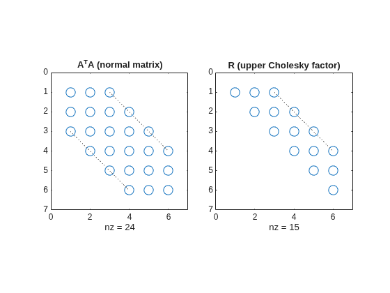
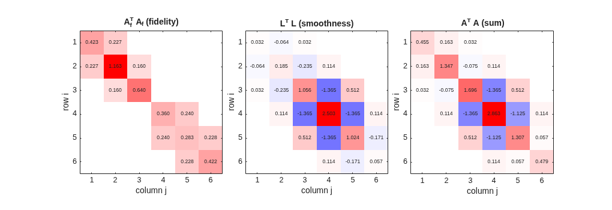
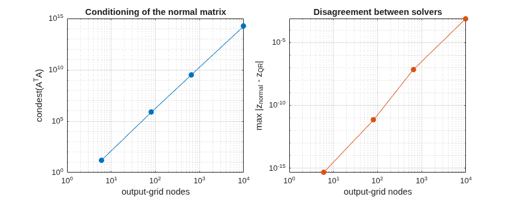

Prerequisites: Read Foundations: Regularizing Data with One Input first. It defines the fidelity rows, the second-difference smoothness rows, and the stacked least-squares system \(Az \approx b\) that this page implements. Every example here has one input variable, which this site calls 1D input.
Learning goals
Store the fidelity and smoothness blocks as sparse triplets, and count what dense storage wastes.
Explain why \(A^TA\) is banded and why its Cholesky factor keeps the same band.
Build \(A^TA\) and \(A^Ty\) by accumulating one row at a time, without multiplying matrices.
Solve the banded system by factoring and substituting, never by an explicit inverse, and recognize when the normal equations need extra care.
NoteSource and attribution
This page is adapted from two articles published on Math for Mere Mortals:
The page takes the ideas from those articles and applies them to regularizeNd. This site wrote and computed the text, equations, examples, numbers, and figures.
where \(A_f\) has one row per sample and \(L\) has one row per interior node. The normal equations \(A^TAz=A^Tb\) give the same \(z\). The inverse form \(z=(A^TA)^{-1}A^Tb\) is correct algebra. A program should still not compute it that way. Four habits follow.
Build products directly. \(A^TA\) can be accumulated row by row, so the program never needs a general matrix product.
Store only nonzeros. A fidelity row has at most two nonzeros and a smoothness row exactly three, however many nodes there are. Dense storage spends its memory on zeros.
Factor, do not invert. Factoring \(A^TAz=A^Tb\) gives the same \(z\) with less work. It also avoids the larger residuals a computed inverse can produce (Higham 2002, sec. 14.1).
Use the band. Each row of \(A^TA\) has at most two nonzeros on either side of the diagonal, so each elimination or substitution step touches a small, fixed number of values.
The sections below cover the habits in order.
Assembling the system from triplets
Each sample adds two fidelity entries, one for each node that brackets it. Each interior node adds three smoothness entries, one for each point of its three-point stencil. A sparse matrix stores these as three lists of equal length: row indices, column indices, and values. Such a list is a set of triplets. The sparse constructor drops zero values and adds together triplets that share a row and column.
The example file, fixtures/regularizeNdFoundationsFixtures.m, builds this page’s numbers from the equations and checks them. The five-sample example has \(x=[0.35,\ 1.00,\ 1.80,\ 2.70,\ 3.65]\) with \(y=[1.0,\ 1.4,\ 0.4,\ 1.2,\ 0.2]\), on six output-grid nodes \(g=[0,\ 1,\ 2,\ 2.5,\ 3,\ 4]\), with smoothness \(s=0.01\). The sample at \(x=1\) sits exactly on a node, so its second weight is zero.
Show the MATLAB code
% Fidelity: sample i in [g(j), g(j+1)] at local fraction t gives (i, j, 1-t) and (i, j+1, t).lowerNode=@(g) discretize(x,g);frac=@(g) (x-g(lowerNode(g))) ./ (g(lowerNode(g)+1) -g(lowerNode(g)));fidelityTriplets=@(g) deal(repelem((1:nF)',2),...reshape([lowerNode(g),lowerNode(g)+1]', [],1),...reshape([1-frac(g),frac(g)]', [],1));% Smoothness: interior row r gives three nonzeros in columns r, r+1, r+2.hL=@(g) diff(g(1:end-1));hR=@(g) diff(g(2:end));smoothnessTriplets=@(g) deal(repelem((1:numel(g)-2)',3),...reshape(((1:numel(g)-2)'+ (0:2))', [],1),...reshape(smooth*sqrt(nF/(numel(g)-2))*(g(end)-g(1))^2*... [2./(hL(g).*(hL(g)+hR(g))),-2./(hL(g).*hR(g)),2./(hR(g).*(hL(g)+hR(g)))]', [],1));[iF,jF,vF] =fidelityTriplets(g);[iL,jL,vL] =smoothnessTriplets(g);Af=sparse(iF,jF,vF,nF,nNodes);Lm=sparse(iL,jL,vL,nR,nNodes);A= [Af;Lm];assert(max(abs(full(Af-fx.system.fidelity)), [],'all') <1e-14)assert(max(abs(full(Lm-fx.system.regularization)), [],'all') <1e-14)disp(table(iF,jF,vF,VariableNames=["row i","column j","value"]))fprintf('%d fidelity triplets, %d stored nonzeros; %d smoothness triplets, %d stored nonzeros\n',...numel(vF),nnz(Af),numel(vL),nnz(Lm))
The fidelity triplets for sample 2 are \((2,\,2,\,1)\) and \((2,\,3,\,0)\). The zero stays in the list but not in the matrix. Figure 1 shows where the stored entries sit.
Figure 1: Nonzero pattern of the stacked matrix A for the six-node example. Fidelity rows (blue) sit above the dashed line and smoothness rows (orange) below it. The sample on node 2 has one nonzero because its second weight is zero.
Counting storage
The six-node stacked matrix is \(9\times 6\). Dense storage holds \(54\) numbers, of which \(21\) are nonzero. Its normal matrix \(A^TA\) is \(6\times 6\). It has \(36\) dense entries, \(24\) of them nonzero.
The same samples on a much finer grid show how large the saving gets. Splitting each interval of the six-node grid into 2,000 equal pieces gives 10,001 nodes.
Show the MATLAB code
fineLevel=2000;pieces=arrayfun(@(p) linspace(g(p),g(p+1),fineLevel+1)',1:nNodes-1,UniformOutput=false);gFine=unique(vertcat(pieces{:}));nFine=numel(gFine);nRFine=nFine-2;[ifF,jfF,vfF] =fidelityTriplets(gFine);[ifL,jfL,vfL] =smoothnessTriplets(gFine);AFine=sparse([ifF;nF+ifL], [jfF;jfL], [vfF;vfL],nF+nRFine,nFine);AtAFine=AFine'*AFine;storage= [nNodes,size(A,1)*size(A,2),nnz(A),nNodes^2,nnz(A'*A);nFine,numel(AFine),nnz(AFine),nFine^2,nnz(AtAFine)];disp(array2table(storage,VariableNames=["nodes","dense A","nonzeros A","dense A'A","nonzeros A'A"]))fprintf('dense A at %d nodes: %.1f MB in double precision\n',nFine,8*numel(AFine)/1e6)fprintf('nonzeros of A''*A are %.3f%% of its dense size\n',100*nnz(AtAFine)/numel(AtAFine))fprintf('a pentadiagonal %d-by-%d matrix has 5N-6 = %d band positions\n',nFine,nFine,5*nFine-6)
nodes dense A nonzeros A dense A'A nonzeros A'A
_____ __________ __________ __________ ____________
6 54 21 36 24
10001 1.0005e+08 30002 1.0002e+08 49999
dense A at 10001 nodes: 800.4 MB in double precision
nonzeros of A'*A are 0.050% of its dense size
a pentadiagonal 10001-by-10001 matrix has 5N-6 = 49999 band positions
At 10,001 nodes, the dense \(A\) would hold 100,050,004 numbers, about 800 MB. Only 30,002 are nonzero. The dense \(A^TA\) holds 100,020,001 numbers, of which 49,999 are nonzero, about 0.05 percent. The count \(49{,}999\) equals the number of positions in the band, \(5N-6\), so the band is full. The six-node case gives the same result. It has 24 nonzeros, which equals \(5\cdot 6-6\).
The band of \(A^TA\)
Each row of \(A\) has its nonzeros in a few consecutive columns: two for a fidelity row, three for a smoothness row. The normal matrix is the sum of the outer products \(a_i^Ta_i\) over the rows. The outer product of one row, whose nonzeros fall in a window of \(w\) consecutive columns, changes only entries inside that window. Two columns add to the same entry only when one row’s window contains both. A window of width three keeps every such pair within two places of the diagonal, so \(A^TA\) has bandwidth 2.
The Cholesky factor keeps the band. Factoring a banded matrix in its natural order produces no fill outside the band, so the factor has at most two nonzeros to the right of its diagonal.
Show the MATLAB code
AtA=A'*A;R=chol(AtA);% R'*R = AtA, R upper triangular, natural order[ip,jp] =find(AtA);bandAtA=max(abs(ip-jp));[iR,jR] =find(R);bandR=max(jR-iR);assert(bandAtA==2&&bandR==2&&nnz(AtA) ==5*nNodes-6)closealltiledlayout(1,2,TileSpacing="compact")k=1:nNodes-2;nexttilespy(AtA,'o',10);holdonplot(k+2,k,':',k,k+2,':','Color', [0.40.40.4])title('A^TA (normal matrix)')nexttilespy(R,'o',10);holdonplot(k+2,k,':','Color', [0.40.40.4]) % R is upper triangular: only the upper edgetitle('R (upper Cholesky factor)')

Figure 2: Left: the normal matrix \(A^TA\) is pentadiagonal, with every nonzero within two places of the diagonal. Right: its upper Cholesky factor \(R\) has the same bandwidth, with no fill outside the band. Dotted lines mark the band edges.
Factoring and solving without an inverse
With \(A^TA=R^TR\) and \(R\) upper triangular, the solve is two triangular steps. First solve \(R^Tw=A^Tb\) from the top down. Then solve \(Rz=w\) from the bottom up. Neither step forms an inverse. Each is a run of substitutions.
Show the MATLAB code
zChol=R\ (R'\ (A'*b));% two triangular solves, no inverse formedfprintf('max difference from the example file solution: %.3g\n',max(abs(zChol-fx.system.solution)))assert(max(abs(zChol-fx.system.solution)) <1e-14)
max difference from the example file solution: 2.22e-16
MATLAB’s own AtA \ (A'*b) chooses a sparse factorization internally. This page shows the explicit two-step form so the band is visible in the loops that follow.
Forming \(A^TA\) by accumulation
The loop never multiplies matrices. It visits each row and adds its contribution. Each fidelity row contributes \(w^Tw\) to the entries of \(A^TA\) at its nonzero columns, and \(y_i w^T\) to \(A^Ty\). Each smoothness row contributes \(w^Tw\) and nothing to the right-hand side, because its entry in \(b\) is zero.
Show the MATLAB code
AtAacc=zeros(nNodes);Atbacc=zeros(nNodes,1);fori=1:nF% fidelity rows: two triplets eachc=jF(2*i-1:2*i);w=vF(2*i-1:2*i);AtAacc(c,c) =AtAacc(c,c) +w*w';Atbacc(c) =Atbacc(c) +y(i)*w;endfori=1:nR% smoothness rows: three triplets eachc=jL(3*i-2:3*i);w=vL(3*i-2:3*i);AtAacc(c,c) =AtAacc(c,c) +w*w';endassert(max(abs(AtAacc-full(AtA)), [],'all') <1e-14)assert(max(abs(Atbacc-fx.projection.AfTy)) <1e-14)fprintf('accumulated A^TA agrees with the product A^TA to round-off\n')
accumulated A^TA agrees with the product A^TA to round-off
Sample 3 sits at \(x=1.8\) with \(y=0.4\). It lies in the interval \([1,2]\), 0.8 of the way across, so its fidelity row has weight \(0.2\) on column 2 and \(0.8\) on column 3. Its contribution to \(A^TA\) is the outer product
The smoothness rows follow the same rule, with scaled weights. Row 2 is centred on the node at \(x=2\) and reaches the nodes at \(x=1\) and \(x=2.5\), so its columns are 2, 3, and 4. Its unscaled weights, from the spacings \(h_1=1\) and \(h_2=0.5\), are \([\tfrac43,\ -4,\ \tfrac83]\). Multiplying by the smoothness multiplier \(0.1788854382\) gives \([0.238514,\ -0.715542,\ 0.477028]\).
Its outer product adds \(0.512\) to the \((3,3)\) entry of \(L^TL\), the entry for column 3. The total there is \(1.056\). Rows 1 and 3 supply the other \(0.544\).
Show the MATLAB code
sel=iL==2;cL2=jL(sel);wL2=vL(sel);contributionL2=wL2*wL2';disp(table(cL2,wL2,VariableNames=["column","scaled weight"]))disp(contributionL2)LTL=full(Lm'*Lm);fprintf('(3,3) entry of L^TL: %.6g, from row 2: %.6g\n',LTL(3,3),contributionL2(2,2))assert(max(abs(wL2'- [0.238514-0.7155420.477028])) <1e-6)assert(abs(LTL(3,3) -1.056) <1e-12&&abs(contributionL2(2,2) -0.512) <1e-9)
Summing the fidelity and smoothness contributions gives \(A^TA=A_f^TA_f+L^TL\). Figure 3 shows the two blocks and their sum.
Show the MATLAB code
cmap= [linspace(0,1,128)',linspace(0,1,128)',ones(128,1);...ones(128,1),linspace(1,0,128)',linspace(1,0,128)'];AfAf=full(Af'*Af);panels= {AfAf,LTL,full(AtA)};titles= {'A_f^T A_f (fidelity)','L^T L (smoothness)','A^T A (sum)'};closeallfigure('Position', [1001001020350]);tiledlayout(1,3,TileSpacing="compact")forp=1:3M=panels{p};nexttileimagesc(M);axisimagemx=max(abs(M(:)));clim([-mxmx]);colormap(cmap)fori=1:nNodesforj=1:nNodesifabs(M(i,j)) >1e-12text(j,i,sprintf('%.3f',M(i,j)),HorizontalAlignment='center',FontSize=6.5)endendendtitle(titles{p});xlabel('column j');ylabel('row i')set(gca,'XTick',1:nNodes,'YTick',1:nNodes,'YDir','reverse')end

Figure 3: Contributions to the normal matrix for the six-node example: the fidelity block \(A_f^TA_f\) (left), the smoothness block \(L^TL\) (middle), and their sum \(A^TA\) (right). Blue is negative and red positive. Entries outside the band are zero and blank.
Solving the banded system
The band also gives a compact layout for \(R\). Its upper band has three diagonals, so it fits in an \(n\)-by-3 array whose row \(i\) holds \(R(i,i)\), \(R(i,i+1)\), and \(R(i,i+2)\). The two substitution loops below read only those three values per row. They also count their multiply-adds.
Show the MATLAB code
n=nNodes;Rb=zeros(n,3);% Rb(i,k) = R(i, i+k-1)fori=1:nfork=1:3ifi+k-1<=n,Rb(i,k) =R(i,i+k-1);endendendops=0;w=zeros(n,1);fori=1:n% forward: R' w = A'bacc=Atbacc(i);forj=max(1,i-2):i-1% R(j,i) is stored in Rb(j, i-j+1)acc=acc-Rb(j,i-j+1) *w(j);ops=ops+1;endw(i) =acc/Rb(i,1);endzBand=zeros(n,1);fori=n:-1:1% back: R z = wacc=w(i);fork=2:3j=i+k-1;ifj<=nacc=acc-Rb(i,k) *zBand(j);ops=ops+1;endendzBand(i) =acc/Rb(i,1);endfprintf('banded solve: %d multiply-adds (4n-6 = %d); dense triangular solves: %d (n(n-1))\n',...ops,4*n-6,n*(n-1))fprintf('max difference from the example file solution: %.3g\n',max(abs(zBand-fx.system.solution)))assert(ops==4*n-6&&n*(n-1) ==30)assert(max(abs(zBand-fx.system.solution)) <1e-14)
banded solve: 18 multiply-adds (4n-6 = 18); dense triangular solves: 30 (n(n-1))
max difference from the example file solution: 2.22e-16
Each step uses the same few neighbours whatever the size of the grid. The banded solve costs \(4n-6\) multiply-adds, against \(n(n-1)\) for dense triangular solves. For six nodes that is 18 against 30. The banded cost grows like \(4n\) while the dense cost grows like \(n^2\), and the storage for \(R\) grows like \(3n\).
When normal equations need care
The normal matrix has a weakness, and this calculation shows it. Its condition number is the square of the condition number of \(A\). On the six-node example, \(\operatorname{cond}(A)\approx 3.19\) and \(\operatorname{cond}(A^TA)\approx 10.2\). A QR solve on \(A\) has error governed by \(\operatorname{cond}(A)\), while the normal-equation solve has error governed by roughly \(\operatorname{cond}(A)^2\)(Golub and Van Loan 2013).
Refining the grid makes this worse, with the samples held fixed. The smoothness rows grow in weight as the spacing shrinks, so \(A^TA\) becomes more ill-conditioned while the data stay the same. The next cell refines the six-node grid at four levels, from six to 10,001 nodes. At each level, it compares the normal-equation solution with a QR solution of the same stacked system.
closeallfigure('Position', [100100860340]);tiledlayout(1,2,TileSpacing="compact")nexttileloglog(nodesL,condL,'o-','Color',blue,'MarkerFaceColor',blue)xlabel('output-grid nodes');ylabel('condest(A^TA)');title('Conditioning of the normal matrix');gridonnexttileloglog(nodesL,gapL,'o-','Color',orange,'MarkerFaceColor',orange)xlabel('output-grid nodes');ylabel('max |z_{normal} - z_{QR}|');title('Disagreement between solvers');gridon

Figure 4: Estimated condition number of \(A^TA\) (left) and the difference between the normal-equation and QR solutions (right), as the grid is refined with the samples held fixed. Both are plotted against the number of output-grid nodes.
At six nodes the two solutions agree to round-off. At 10,001 nodes the condition estimate is about \(1.8\times10^{14}\). The two solutions differ by about \(8\times10^{-4}\). MATLAB issues no warning, and the output gives no sign of the disagreement. The difference shows that the two solvers disagree. It does not measure error, because the code checks neither solution against a reference. On this grid, the normal-equation route is more sensitive to rounding. Where conditioning matters, QR on \(A\) is the safer route. The Solving section of the deep dive explains how regularizeNd exposes that choice.
Connection to regularizeNd
The matrices on this page are the ones regularizeNd builds for one input variable. The check below calls regularizeNdMatrices and regularizeNd with this page’s samples, grid, and smoothness value, using 'linear' interpolation. It runs when the page renders and reports the measured difference from this page’s own matrices and solutions. It asserts that every difference is below \(10^{-12}\). Before the check runs, its setup adds the regularizeNd source folder to the MATLAB path. When that folder is not present, the check is skipped with a message.
Show the MATLAB code
if~havePackagedisp('regularizeNd source folder not found. Package checks skipped.')else [pkgAf,pkgLcell] =regularizeNdMatrices(x, {g},smooth,'linear');pkgL=pkgLcell{1};pkgA=vertcat(pkgAf,pkgL);zPkgNormal=regularizeNd(x,y, {g},smooth,'linear');zPkgBackslash=regularizeNd(x,y, {g},smooth,'linear','\');dAf=max(abs(full(pkgAf-Af)), [],'all');dL=max(abs(full(pkgL-Lm)), [],'all');dAtA=max(abs(full(pkgA'*pkgA-AtA)), [],'all');dNormal=max(abs(zPkgNormal-zChol));dBackslash=max(abs(zPkgBackslash-zChol));fprintf('fidelity block: max difference %.3g\n',dAf)fprintf('scaled smoothness block: max difference %.3g\n',dL)fprintf('normal matrix A''*A: max difference %.3g\n',dAtA)fprintf('solved table, default solve: max difference %.3g\n',dNormal)fprintf('solved table, ''\\'' solve: max difference %.3g\n',dBackslash)assert(max([dAfdLdAtAdNormaldBackslash]) <1e-12)end
fidelity block: max difference 0
scaled smoothness block: max difference 0
normal matrix A'*A: max difference 0
solved table, default solve: max difference 3.33e-16
solved table, '\' solve: max difference 2.22e-16
The rows of \(A_f\) are linear-interpolation weights on the two bracketing nodes. regularizeNdMatrices builds them the same way the triplet cell above does.
The rows of \(L\) are three-point second-difference stencils. The scale is the smoothness value, times the square root of the sample count over the number of smoothness rows, times the squared width of the grid.
The default solve, solver="normal", builds \(A^TA\) and \(A^Ty\) and calls MATLAB’s sparse backslash on the normal system. The band and the accumulation described above are properties of that normal matrix.
The '\' option calls backslash on the stacked matrix \(A\). For a rectangular sparse matrix, MATLAB’s backslash uses a sparse QR factorization. That is the route the conditioning section compares against.
The deep dive’s Solving section covers the solver options, the iterative methods, and when to use each. This page does not repeat them.
How this differs from the original
Interface. The original is an Excel array function written in VBA, and its inputs and outputs live in spreadsheet ranges. This page has no spreadsheet function and no VBA. The ideas carry over.
Inversion. The original article says the spreadsheet solved the system with MINVERSE(), because that was what Excel offered. Its VBA function used Gaussian elimination and back-substitution. The companion spreadsheet used an explicit inverse. The teaching point here is “do not invert,” and this page takes no position on the spreadsheet beyond that.
Storage. The original describes a compressed layout for the pentadiagonal matrix, with the diagonal in the third of five stored columns. This page uses MATLAB sparse triplets for \(A\) and a three-diagonal array for \(R\). regularizeNd uses MATLAB sparse matrices.
Solver. The original’s solve is hand-written elimination specialized to five bands. regularizeNd passes the normal system to MATLAB’s sparse backslash. It also offers backslash on the stacked matrix and the iterative solvers covered in the deep dive.
Symmetry. The original notes that symmetry lets the second-derivative outer product be computed in six products instead of nine. The loop above computes the full outer product for clarity.
Terminology. The original calls its inputs “input points” and its outputs “output points.” Its title says “2D data” for one input variable and one output. This site uses samples, output-grid nodes, and 1D input. This page reuses none of the article’s example values. Every number here comes from the example file or from a cell on this page.
Golub, Gene H., and Charles F. Van Loan. 2013. Matrix Computations. 4th ed. Johns Hopkins University Press.
Higham, Nicholas J. 2002. Accuracy and Stability of Numerical Algorithms. 2nd ed. Society for Industrial and Applied Mathematics. https://doi.org/10.1137/1.9780898718027.